～お願い～
公共交通機関をご利用ください
やむを得ない場合を除き、公共交通機関をご利用いただくことを強くお勧めいたします。
 最寄り駅からの経路と所要時間、運賃を調べたい方はこちら。
最寄り駅からの経路と所要時間、運賃を調べたい方はこちら。
最寄り駅からの経路と所要時間、運賃を調べたい方はこちら。
最寄り駅からの経路と所要時間、運賃を調べたい方はこちら。
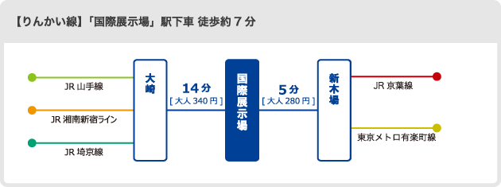
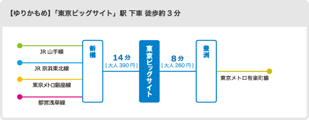
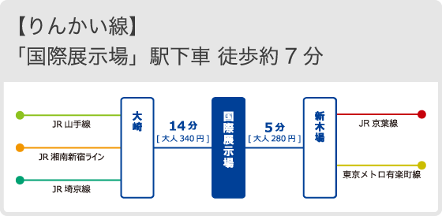
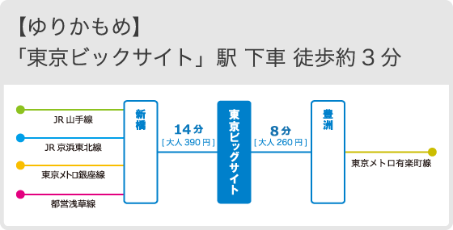
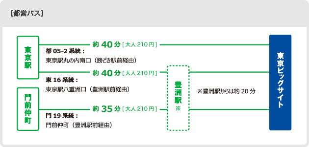
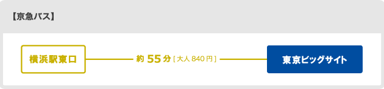
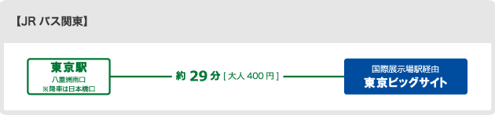
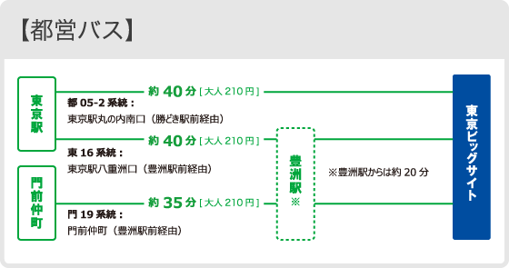
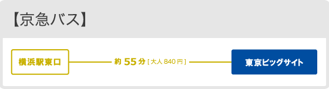
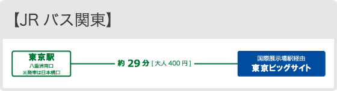
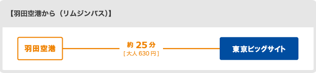
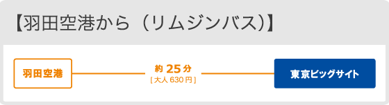
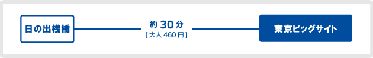
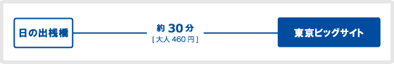
※料金表示は、切符ご利用時の運賃です。
※駐車場は会場からとても遠く、また収容台数も限られております。公共交通機関をご利用いただくことを強くお奨めいたします。